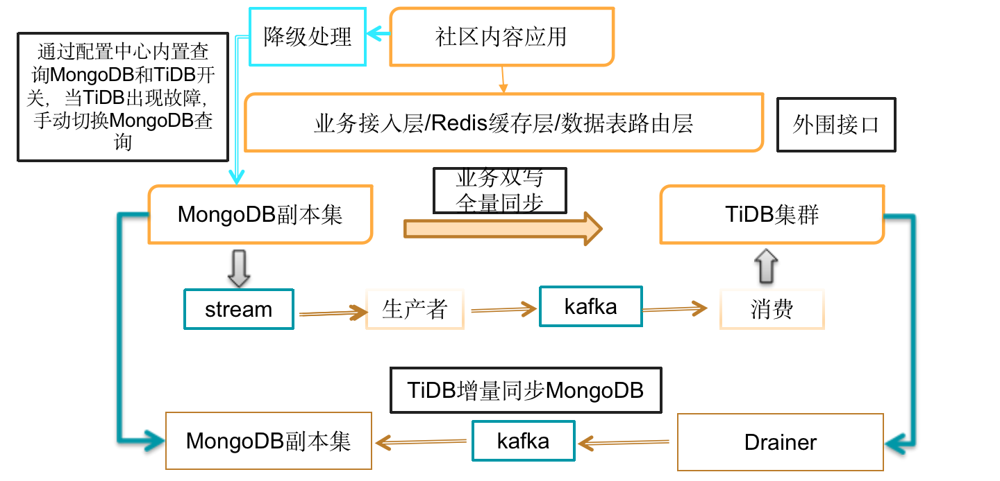
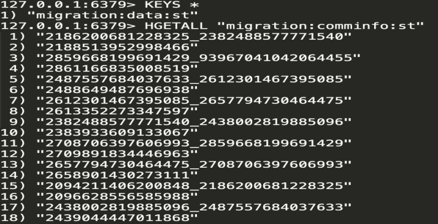
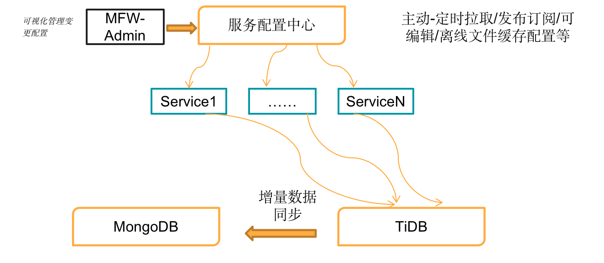
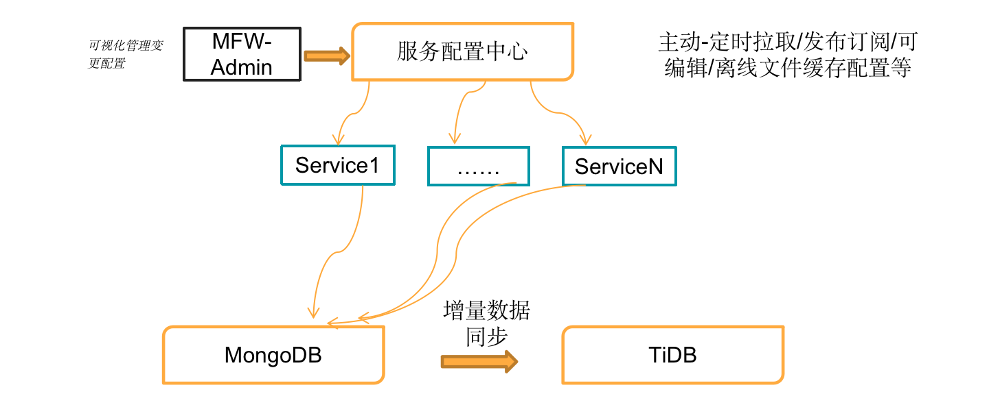
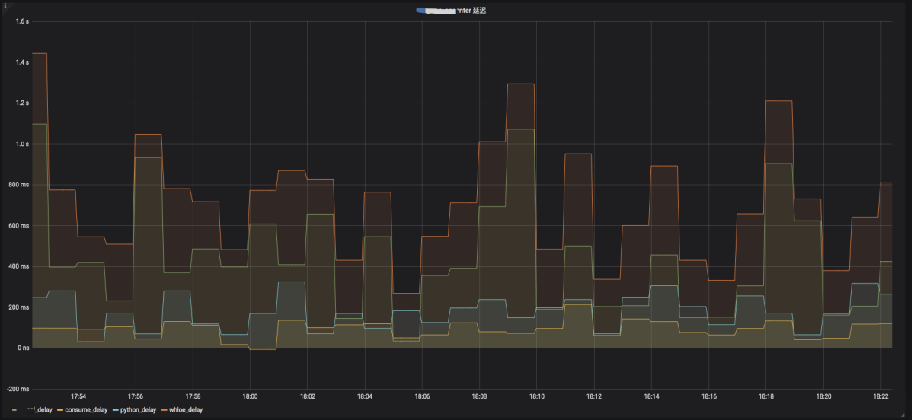
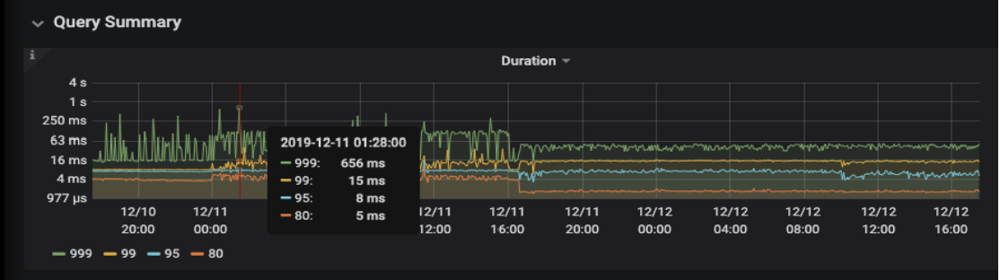
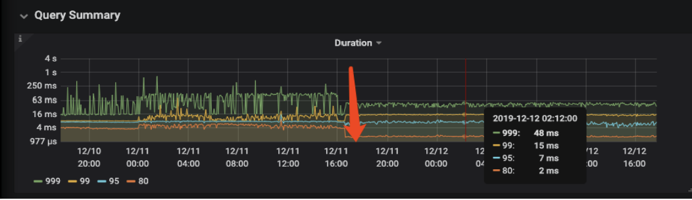

Mongodb 迁移到 TiDB
背景介绍
MongoDB 具有诸如高效字段维护，自动故障转移等优秀特性，这使很多归档类业务可以快速在 MongoDB 上完成搭建，并为业务提供稳定的数据支撑。
但在快消时代的背景下，很多业务量日活数量日益增长，相应的数据量也成倍得增长。之前的基础架构已满足不了现在的需求，所以进行架构重构就是大势所趋。虽然可以使用 MongoS 集群方案，通过 Oplog 解决备份恢复数据一致性的问题，来提供更高吞吐的业务支撑架构，但需要花费更多精力在多个集合关系维护上面。比如像直播业务中会有带货的子业务需求，业务逻辑中会做一些关联更新或者删除的操作。在这种场景中，对大表不但会进行高并发的实时查询和写入操作，还要有少量的更新和删除操作，这都为架构的研发和运维带来了不少麻烦。这类业务场景，在初选方案时候可能会先考虑到使用 MySQL 和分库分表的架构。但是分库分表架构一方面无法满足业务上对于分页查询和非分区健查询的需求等，另外运营部门对用户数据进行聚合分析的需求其他架构来支持。
如果使用 MongoS 解决方案，为提高 AP 场景下的查询效率，需要通过 MongoDB 先将数据同步到 Kafka，再通过 ClickHouse 处理查询请求。由于这个链路较长，导致日常维护成本增加。随着线上的业务越来越具有多样性，现有的工具既不能提供最佳的处理方案，也无法高效的管理数据聚合结构。
因为 MongoDB 到 TiDB 的数据迁移是异构数据迁移，主要是根据实际的业务场景，需要自研一套异构迁移的程序来完成数据的全量、增量同步。所以下文会以迁移流程逻辑为主，尤其是对于数据一致性验证的理论方法做了详细的介绍。
TiDB 和 MongoDB 的优势对比
| MongoDB | TiDB |
|---|---|
| 1.灵活模式、高可用性、可扩展性； 2.通过 json 文档来实现灵活模式； 3.通过复制集来保证高可用； 4.通过 Sharded cluster 来保证可扩展性； |
1.不用分库分表、高可用、弹性拓展； 2.减少分库分表带来的架构复杂性； 3. 通过多副本来保证高可用 4.通过集群模式来保证可扩展性 |
TiDB 的架构
业务存在多样性，会有高并发查询场景，也有高频查询场景，还会有复杂的聚合、分组的计算查询场景。在高并发的读请求业务对响应延迟极为敏感的场景，需要使用数据缓存层，像 Redis Cluster 这种缓存数据库来处理高并发、高频的热点请求。另外本文介绍的 MongoDB 迁移到 TiDB 的实践中，涉及到数据一致性验证的工作，需要通过 Redis 校验完成，那么先介绍一下完整的 TiDB 架构。
业务的写请求通过多个 Web Service 通过 Proxy 写入到第一层缓存 Redis Cluster，最终写入到 TiDB 集群。因为业务的写入请求可能会有 Transaction too large 的大事务，所以业务要先判断写入请求的事务大小，先将超过事务大小限制的写入请求会先进入 Redis Cluster，最后写入到 TiDB 集群，小于事务限制的写入请求直接写入 TiDB 集群。有些在线接近于实时分析，比如在线监控数据信息，使用 TiDB-binlog 将数据通过 Kafka 同步到第二层缓存 Redis Cluster。
业务的读请求通过 Proxy 访问 TiDB 集群，首先判断 Redis Cluster 是否 key-value 存在，如果有则从 Redis 返回，否则读取 TiDB 集群。对于复杂计算 SQL，例如聚合函数计算、分组查询等，业务可以直接将缓存失效，在 TiDB 集群做计算；另外 Spark 集群提供的高频的实时查询业务会在第一层缓存中，实时扫描 Big Key 和 Hot Key。主要基于 Redis LFU 功能，如果访问某个 key-value 大于 5 万次，则将该 key-value 通过程序植入基于 Spark 集群，当然有大概 3～5 分钟过期时间，这里可以根据业务的读请求的热点情况。另外如果访问都是一次，可以读取 TiDB，然后结果缓存到 Redis Cluster。

上文描述中，可以发现在架构中是没有引入数据库中间件处理业务请求，是因为数据库中间件成本可能会略高于这个架构，当然这也主要跟业务有关。这套架构中，业务会通过查询 Redis 和 TiDB 中的业务数据，来验证数据一致性，这也使架构变得复杂。另外业内还有其他方式解决数据一致性问题，比如通过 sleep 和设置延迟时间来保证读写数据的一致性。
数据迁移
迁移前准备
在迁移前要做好迁移流程的梳理，对于一些重要的功能点要确认业务逻辑和技术实现。根据梳理的需求设计迁移流程，确保流程中可以通过手动或者自动程序做到防患于未然，主动出击。以下为在迁移流程设计前，要考虑的几个比较重要问题，并提供一些可行性的方案。
数据类型的差异梳理：
MongoDB 原有的数据类型属性需要改变，例如 MongoDB 中的
_id要摒弃，使用 TiDB 自增主键ID，另外这里需要考虑到写入热点问题。业务侧可以考虑使用
uuid或者snowflakes算法将主键值进行打散；对于 PK 非整数或没有 PK 的表，TiDB 会使用一个隐式的自增 rowid，大量
INSERT时会把数据集中写入单个 Region，造成写入热点。通过设置SHARD_ROW_ID_BITS，可以把 rowid 打散写入多个不同的 Region，缓解写入热点问题。但是设置的过大会造成 RPC 请求数放大，增加 CPU 和网络开销。在 v4.0 版本的 TiDB，提供了
Auto Random Key的特性，通过Auto Random Key可以自动将int主键生成随机数来避免写入热点问题；
MongoDB 和 TiDB 的部分字段类型不一样，MongoDB 时间列写入基本都是时间戳，TiDB 提供多种时间的数据类型：
DATEDATETIME，TIMESTAMP，TIME，YEAR。
数据一致性：全量迁移上十亿的数据的一致性，以及增量同步时变更数据的一致性都要保证；
关于时间有序性：要确认业务表是否有更新时间戳的场景。如果有，那么要确认该字段是否有关索引，于此同时如果是有删除数据的操作，那么就不能使用更新时间字段作为增量迁移的进度标准；
写入性能：线上数据量达到亿级，在全量、增量迁移时要使用批量处理来加快迁移速度；另外通过 Web Service 增加并发线程，因为有幂等性，即回放多次但最终结果还是一致的，所以需要保证表级数据的有序性，也就是要保证一张表同时只有一个线程在进行增量数据的回放；
容错能力：制定同步任务异常处理机制，一旦 watch 监听任务出现异常，就从异常时间点开始从源端进行增量数据抽取，并进行重试操作流程；
断点续传能力：将转换失败的数据
uid记录下来，重试或程序单独处理时方便根据uid查找对应的数据。
迁移方案
迁移方案如图所示，MongoDB 数据通过一套 java 开发的程序来完成全量数据的同步，将一致性校验数据写入 Redis Cluster 中进行全量数据完整性校验。增量同步的数据通过 MongoDB 集群的 Change Stream 同步到 Kafka ，最后数据写入到 TiDB 集群中，并进行一致性校验。同步完成后，会将业务读请求切换到 TiDB 集群，TiDB 集群通过 TiDB-binlog 到 Kafka 方式，将业务的增量数据同步回 MongoDB 集群进行一致性校验。此时 TiDB 集群支持读写，MongoDB 集群只支持写入。运维过程中，需要通过查询业务情况、集群状态来监控 TiDB 集群和 MongoDB 集群可用性和状态，如果 TiDB 出现故障，MongoDB 可以作为备库提供服务，管理人员通过手动或者自动程序，将业务请求切换到 MongoDB。下文会有具体的实施方案。

注意
从 MongoDB v3.6 开始提供了 Change Stream 增量功能，可以监控数据的变更情况，为实现数据同步及转换处理提供支撑功能。可以通过对集合执行
watch命令，获得一个MongoCursor对象，这样就可以遍历所有的变更，获得被监听对象的实时变更。
迁移流程
如图所示，迁移流程主要是 6 个主要部分，我们来分别介绍以下详细的迁移流程。

- 通过代码实现异构迁移的双写
在全量同步过程中，以实时业务为例。在业务逻辑中，一般会获取 max(uid) 作为依据进行分页读取数据。所以可以制定这样一个逻辑规则：如果 TiDB 集群新增的业务数据值小于 max(uid) ，那么开启双写，将在 TiDB 集群和 MongoDB 集群上分别写入一份数据；在迁移时，如果 TiDB 集群的业务数据值小于 max(uid) 的数据进行了 DML 操作，那么同时在 TiDB 表中也进行 DML 操作。
- Redis 记录迁移记录
第一次拉取全量数据，假设以数据维度分片的异构迁移程序的服务，要服务每开启 20 个线程，每个线程读取迁移的数据，并会记录迁移的 uid 到 Redis Cluster，目的是为了线程终止后，不用全量恢复数据，实现断点续传；另外设置 Redis 的 log 检查迁移数据情况、慢查询、错误信息等输出。

- 开始增量迁移
增量数据迁移方案采用 UpdateTime 和 Change Stream 方案，一方面 UpdatedTime 能将 insert 和 update 的增量数据拉取，另外一方面对于物理删除 delete 操作则检测不到，所以使用 MongoDB 通过 Change Stream 将增量拉取数据到 Kafka，最后由程序分析 Kafka 数据后 同步到 TIDB 集群。
根据业务访问特点，避开业务高峰数据迁移，将迁移操作实施在低峰时间段。
数据验证，通过查询表中的数据量总数和业务的验证来保证数据的完整性。
业务实现双写
关于写请求：在迁移 TiDB 表之前，插入写到 MongoDB 集群和 TiDB 集群，同时源表更新和删除的操作，也会同步到 TiDB 中；在表数据在迁移 TiDB 表之后，源表和 TiDB 表都会进行插入和更新操作。
关于读请求：在迁移 TiDB 表之前，业务查询会优先查询 MongoDB 集群；表数据在迁移 TiDB 表之后，业务查询会优先查询 TiDB 集群。
最后读写请求可以在 TiDB 集群完成，此时停止双写操作。增量数据通过 TiDB-binlog 经过 Kafka 同步到 MongoDB ，可以设计一个降级处理机制，为业务准备逃生通道。
关于数据一致性的校验机制
增量同步与校验机制
使用 MongoDB 的 Change Stream 根据时间拉取数据到 Kafka，同步到 TiDB 集群。同时 Redis 也会记录以 uid 的数据维度的迁移范围数据，可以通过校验 Kafka 的 uid 和 Redis 的 uid 进行比对是否一致。

MongoDB metadata 的一致性验证
Metadata 作为 MongoDB 中最重要的表，虽然有 TiDB 集群的数据复制来保证数据同步，也最好双重确认来保障服务可用性。可以在 MongoDB 中开发了一个脚本来批量对比两个 MongoDB 数据集的 Metadata 表，通过扫描 Metadata 表所有的键值和时间戳来发现差异。在初期确实发现了差异，也依此来修正了 TiDB 集群的数据复制的配置。
新 TiDB 集群的数据表的可用性验证
为了验证新集群 TiDB 集群的数据可用性，需要启动了一个测试的 MongoDB 实例用以模拟兼容 TiDB 集群的查询。该测试实例不直接对用户服务，而是通过回放 SQL 方式来进行可用性测试。回放测试会自动验证查询结果是否正常返回。这种测试方式弥补了回归测试用例覆盖范围的不足，通过测试可以确实发现隐藏的问题并进行了修复。当然在生产环境的切换后，如果未发现问题那是最好的。
回退方案
正常情况下，建议为业务准备逃生通道。逃生通道很重要，如果切换读写请求到 TiDB 集群后，可能因为业务逻辑兼容性或者其他的服务异常情况，需要通过切换回 MongoDB 保证业务的可用性。我们在这里可以设置一个降级处理逻辑，要设计触发器和制定完备的处理预案。
降级处理
- 降级处理流程
如下图所示，运维平台最好有一套服务配置中心系统，可主动的定时拉取、发布订阅，可编辑、离线缓存配置文件等等功能。从流程图中，可以看到正常的业务读写请求会在 TiDB 集群，TiDB 集群会通过 TiDB-binlog 的下游 Kafka 模式将数据同步到 MongoDB 的集群，此时 MongoDB 作为备库在整个架构里。

如当遇到 TiDB 集群业务不可以访问的情况的突发情况，需要通过人为手段恢复。通过手动变更配置信息，通过服务配置中心系统生效配置请求处理，将 Web Service 请求全部切换到 MongoDB，同时 MongoDB 会通过 Change Stream，下游配置 Kafka 模式将增量数据同步回 TiDB 集群。

- 降级处理流程的触发器设计
在业务层可以设计“熔断机制”，通过监控 RPC 调用失败次数占比来确认业务的请求是否正常处理，一旦触发“异常统计条件”，直接熔断服务。在业务侧直接返回报错，不再 RPC 调用远端服务。
异常统计条件：指定的时间窗口内，RPC 调用失败次数的占比，超过设定的阈值，就不再 RPC 调用，直接返回 ”降级逻辑“。
# 熔断参数配置：熔断器的参数
circuitBreaker.requestVolumeThreshold： //滑动窗口的大小，默认为 20
circuitBreaker.errorThresholdPercentage： //错误率，默认 50%
circuitBreaker.sleepWindowInMilliseconds：//过多长时间，熔断器再次检测是否开启，默认为 5000，即 5s 钟
# 配置含义
每当 20 个请求中，有 50% 失败时，熔断器就会断开。此时，再调用此服务，将不再调远程服务，直接返回失败。5s 后，重新检测该触发条件，判断是否熔断器连接，或者继续保持断开。
降级操作是配合“熔断机制”，熔断后，Web Service 不再调用远端服务器的 RPC 接口，而采用本地的回退机制，返回一个“备用方案”和“默认取值”。
这个机制相比直接挂掉业务要好一些，但也要看业务场景。接下来业务隔离重试，运维同学要通过配置中心系统内置查询 MongoDB 和 TiDB 的开关，将 TiDB 手动切换 MongoDB 查询。切换后，因为还有增量数据同步到 TiDB 集群，可以通过 Kafka 监控来确认数据同步的延迟情况。

迁移后的 SQL 优化
MongoDB 的查询也基本都是单表，通过走索引方式查询。针对每一条改造后的 SQL 都要进行了优化。比如可以使用精确的命中最优的索引，从而实现了在几十亿数据量。在类似迁移案例的用户反馈中，优化前的 TP 业务 99% 的响应时间在 15ms，99.9% 的响应时间在 700ms 内，这其中有很多的查询请求是都是 sum、 group by 的形式的。经过对于查询优化，通过调整聚合计算的并发参数或者索引优化。优化后，TP 业务 99% 的响应时间在 15ms，99.9% 的响应时间在 48ms；具体的优化建议可以查阅 SQL 优化的官方文档。以下为用户反馈的优化前后的性能对比。
- 优化前

- 优化后

总结
MongoDB 迁移到 TiDB 链路比较长，使用了 MongoDB 的 change stream 和 TiDB 的 TiDB-binlog ，均通过 Kafka 实现增量的数据同步。另外比较重要的数据一致性校验，在全量同步、增量同步过程中，主要通过业务表的唯一键和 Updatetime，通过 Redis、MongoDB、TiDB 的业务数据比对来完成。其次就是在整个链路中，为业务准备逃生通道，在任意场景中，都保证了业务的可用性以及可控的停机时间。因为 MongoDB 和 TiDB 在数据存储格式的差异，也使迁移后的读写请求的优化不可避免。所以建议阅读本书涉及性能优化的章节，为业务的性能助力。